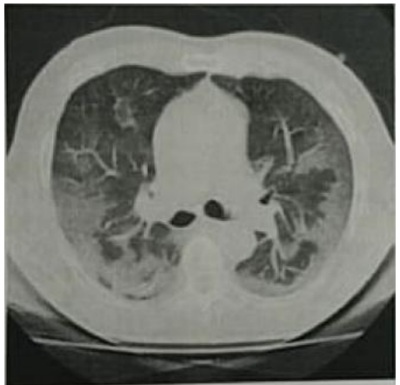
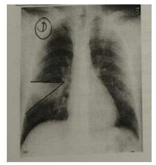

A Vigilância Sanitária (VS) é uma das atividades exercidas pelo Sistema Único de Saúde (SUS). Ela é definida como as ""ações capazes de eliminar, diminuir ou prevenir riscos à saúde e de intervir nos problemas de saúde decorrentes do meio ambiente, da produção e circulação de bens e da prestação de serviços de interesse da saúde"". Entre as áreas de atuação da VS existem áreas de intersecção com a vigilância epidemiológica, dentre elas estão a vigilância de:
Quanto à ocorrência de hanseníase no Brasil, é correto afirmar que:
Gabriela, médica da UBS realiza a consulta de pré-natal de uma gestante de baixo risco muito interessada e que faz várias perguntas. A consulta já passou do tempo previsto e você tem muitas pacientes aguardando consulta, mas precisa solicitar os exames de rotina da gestação. Em relação às orientações e ao consentimento sobre os exames a serem solicitados, assinale a alternativa correta.
Antonio, médico da Unidade Básica de Saúde, recebeu uma paciente de 30 anos de idade, sem fatores de risco para câncer de mama, mas que acredita que fazer exames preventivos é a melhor forma de se cuidar. Por isso, solicita que você peça uma mamogra a de rotina para ela. No entanto, ele considera recusar o pedido da paciente quanto à solicitação da mamografia pois isto configura uma medida de prevenção: Assinale a alternativa correta:
No início do ano de 2015, observou-se a emergência de um agente infeccioso até então não descrito nas Américas, o vírus Zika. A maioria das infecções é assintomática. Os quadros sintomáticos caracterizam-se pela presença de exantema morbiliforme e hiperemia de conjuntivas, de curta duração, e frequentemente sem febre. Um estudo realizado em Salvador (BA) estimou que 70% da população foi infectada na primeira onda epidêmica. Cerca de um ano após a emergência, descreveu-se no país o quadro da síndrome congênita pelo vírus Zika, resultante da transmissão vertical. A síndrome congênita caracteriza-se pelo intenso comprometimento da neurogênese, resultando em microcefalia, hidrocefalia, hipoplasia do cerebelo, dilatação ventricular, comprometimento oto-oftalmológico e artrogripose. As propriedades de infectividade, patogenicidade e virulência do vírus Zika podem ser classificadas respectivamente como:
Pedro, 29 anos de idade, engenheiro elétrico, estava trabalhando quando sofreu queda de um poste. Foi recolhido pelo serviço de resgate e encaminhado ao hospital, onde fez cirurgia em virtude de traumatismo crânio encefálico. Morreu após três dias internado no UTI. Considerando os dados disponíveis, em relação à emissão do atestado de óbito, qual a conduta mais apropriada a ser tomada?
Levando em conta as recomendações sanitárias durante a pandemia COVID-19, uma amostra de 100 jovens de 18 a 25 anos de idade, 80 relataram não ter mantido o distanciamento social na semana anterior, enquanto que em um grupo similar de 100 idosos de mais de 65 anos, apenas 20 relataram não ter mantido o distanciamento social no mesmo período. A razão de chances (odds ratio) de um jovem não ter mantido o distanciamento social em relação a um idoso é:
A territorialização é um pressuposto básico da estratégia de Saúde da Família. Nela, o tipo de território que se caracteriza por ser delimitado com a lógica da homogeneidade socioeconômico-sanitária é:
Uma paciente HIV-positiva está em tratamento e tem um plano de saúde oferecido pela empresa na qual trabalha. Ela é acompanhada por infectologista em consultório particular e realiza exames cobertos por seu convênio médico. Todos os meses, a paciente retira gratuitamente medicamentos antirretrovirais dispensados por serviço público de referência do Sistema Único de Saúde (SUS). Qual é o princípio do SUS que garante às pessoas o acesso a esses medicamentos?
Em um artigo sobre um estudo com delineamento caso-controle pode ser determinado(a):
Em uma equipe cuja área de abrangência tem 5.000 pessoas cadastradas, com 1.050 hipertensos, sendo que desses 150 tiveram diagnóstico no último ano, a incidência de hipertensos é de:
A respeito dos acidentes de trabalho, analise as afirmativas a seguir. I. Ocorrem no exercício da atividade laboral. II. Ocorrem no percurso de casa para o trabalho, e vice versa. III. Envolvem apenas o(a) trabalhador(a) inserido(a) no mercado formal de trabalho. IV. São considerados acidentes de trabalho graves aqueles que resultam em morte, mutilações e aqueles que acontecem com menores de 18 anos de idade. Estão corretas as afirmativas
A respeito do planejamento de estudos na área da saúde, metodologia da pesquisa epidemiológica e medidas de ocorrência das doenças, avalie as afirmativas a seguir. I. Quanto mais estreito for o intervalo de con ança, maior a probabilidade de a média amostral estar próxima da média populacional. II. Desvio-padrão = raiz quadrada da média do quadrado dos desvios. III. Em um determinado local onde o Indicador de Swaroop Uemura é alto, pode-se a rmar que provavelmente o coeficiente de mortalidade infantil desse local deve ser alto. Estão corretas as afirmativas
Em um estudo de séries temporais com dados secundários referentes ao número de equipes de Saúde da Família implantadas e às internações por condições sensíveis à Atenção Básica no SUS, os autores evidenciaram a redução em 45% das taxas padronizadas de ICSAB por 10.000 hab, que passaram de 120 para 66, no período de 2001 a 2016. Esse tipo de estudo é classificado como:
João, médico da UBS realizou visita domiciliar de uma senhora de 84 anos, que após fratura de fêmur esta acamada, a pedido do Agente Comunitário de Saúde que vinha tendo di culdade de dialogar com a família. Logo ao entrar na casa, percebeu o odor de urina e fezes, e constatou que a ela tinha dermatite de fralda extensa e hematomas em braços. Ao exame alerta, lúcida e orientada. Com base nesse quadro, o que é recomendado o medico fazer:
Mulher, 26 anos, professora do ensino médio, chega à emergência trazida pela tia, que relata que há três dias não se levanta da cama, não responde às solicitações e não aceita quase toda alimentação. Ao exame físico apresenta leve desidratação e exibilidade cerácea. Os exames laboratoriais são normais e o screening para drogas, negativo. Para o diagnóstico das transtornos mentais, como no caso acima o médico deve levar em conta as informações coletadas, história objetiva e subjetiva. Sobre a abordagem clínica da paciente, leias as afirmações abaixo e marque a ERRADA:
Uma completa falta de cheiro ou distorções no olfato podem ser indicativos de várias lesões e doenças clinicamente importantes. As alterações do olfato são achados importantes na semiologia. Cacosmia refere-se a:
Mulher em primeira gestação de 32 anos fez sua primeira consulta de pré-natal com 12 semanas de idade gestacional, estando com IMC de 32 e pressão normal. Retorna na sua terceira consulta de pré-natal na 23 semana de gestação com seus exames do primeiro trimestre: glicemia de jejum 80 mg/dl, tipagem sanguínea O+, sorologias para HIV, toxoplasmose, hepatite B e teste rápido para sí lis negativos. Nesta consulta, foi realizada verificação da pressão arterial que foi de 160/90 mmHg e sumário de urina com proteinúria. A partir dos dados apresentados acima, qual seria a alternativa com o diagnóstico e condutas corretas para o caso?
Homem de 23 anos de idade chega assintomático na UBS e requisita exames de check up. Você verifica que não há fatores de risco para doenças crônicas e que medidas antropométricas estão normais. Considerando a incorporação da promoção da saúde e prevenção de doenças conforme o método clínico centrado na pessoa, a medida que não deveria ser oferecida para esse paciente é:
Paciente procura UBS para renovar a sua receita de diazepam. A médica de família e comunidade, conversa com ela no acolhimento e descobre que a medicação foi prescrita por um psiquiatra há anos, e desde então vinha sendo renovada pela equipe de outra UBS onde a senhora consultava. Na consulta, não se identi ca nenhum quadro que justi que o uso de medicação. Com base nisso, a médica deve:
Revisar: possível letra faltando em enunciado
Paciente, 60 anos, sexo masculino, foi a consulta de forma não voluntária por insistência de sua esposa. Nega quaisquer sintomas no momento. Refere hábitos de tabagismo (35 maços/ano) e etilismo (600 ml de bebida fermentada/dia). Diante desse quadro, para o rastreamento do câncer de pulmão, a conduta adequada é solicitar
Chega uma mulher com quadro de taquipneia importante, associada à tosse seca, que aumenta durante exercício. Na radiogra a de tórax, é visto um derrame pleural bilateral maior à esquerda, ocupando 2/3 do hemitórax esquerdo. Nesse caso, a conduta esperada do médico plantonista é
Pacientes que sofreram queimaduras extensas necessitam de ressuscitação com volumes substancialmente maiores do que vítimas de outros tipos de trauma, especialmente nas 24 horas iniciais, e os volumes administrados são habitualmente calculados em função do peso do paciente e da porcentagem de superfície corporal queimada (%SCQ). Na reposição volêmica inicial,
O cuidado local com a área queimada é, ao lado do atendimento inicial, o fator determinante da evolução do paciente queimado. Sobre tais cuidados,
Qual é o tempo ideal para a realização de fixação das fraturas intertrocantéricas?
Antônia 47 anos, com diabetes e hipertensão arterial. Apresenta re uxo gastresofágico e foi submetida a endoscopia digestiva alta há 1 mês que revelou esofagite grau C de Los Angeles. Está em uso de omeprazol 40mg por dia há 6 meses, mas com persistência de pirose pós prandial, principalmente quando em decúbito horizontal. Exame clínico: bom estado geral, IMC: 36 kg/m2, abdome indolor à palpação, sem outras alterações. Qual é a melhor opção operatória para o tratamento do refluxo gastro-esofágico desta paciente?
Rosa de 62 anos, realizou um ultrassom de abdome superior no qual se evidenciou um pólipo em vesícula biliar de 1,5 cm, com fluxo sanguíneo detectado ao doppler. Não tem sintomas. Qual é a melhor conduta para o caso?
Homem de 65 anos de idade desenvolveu subitamente amaurose no olho esquerdo. O sintoma foi revertido em poucos minutos, mas voltou a ocorrer algumas horas depois, e na segunda oportunidade durou 2 horas. Tem doença arterial periférica e faz tratamento com antiagregantes plaquetários e estatinas. Foi realizada ultrassonogra a com doppler colorido que mostrou estenose carotídea maior que 50% bilateralmente. A conduta que mais diminui o risco de acidente vascular cerebral neste caso é:
Pedro 38 anos, com apendicite aguda complicada, seguida de múltiplas laparotomias exploradoras que evoluíram com fístulas intestinais de alto débito. Encontra-se em regular estado geral, com índice de massa corpórea de 11,8 kg/m². Calculado o gasto basal de energia: 1500 kcal. Foi proposto iniciar dieta parenteral. Qual é o aporte calórico que deve ser prescrito neste momento e quais são os distúrbios eletrolíticos mais prováveis após o início do tratamento?
Classif icações João 54 anos, procura o PS por dor abdominal em cólica, difusa, há 72 horas, associada a distensão abdominal e parada de eliminação de gases e fezes. Refere alteração do hábito intestinal há 3 meses, com necessidade de laxativos para evacuar, além de sangue nas fezes e alteração do formato. Nega vômitos. Não tem antecedentes mórbidos relevantes e nega operações prévias. Ao exame físico está em bom estado geral, corado, desidratado, IMC: 31kg/m2. Abdome: ácido, distendido, pouco doloroso à palpação, sem sinais de irritação peritoneal e sem massas palpáveis. No toque retal, ausência de fezes na ampola, presença de lesão ulcerada circunferencial a 6 cm da borda anal e presença de sangue. Realizada tomogra a de abdome e pelve: ausência de lesões hepáticas, sem líquido livre. Distensão apenas de cólon e espessamento do reto médio distal com linfonodos aumentados no mesorreto. Qual é a conduta?
Mulher de 23 anos de idade, caiu de motocicleta em via expressa. Chega ao Serviço de Emergência após 30 minutos do acidente, trazida pela equipe de Resgate. Na avaliação de admissão na sala de trauma apresenta-se: A: Conversando. Saturação de O2 93%; B: Ausculta pulmonar sem alterações. Ausência de deformidade no tórax; C: PA: 80x50mmHg; FC: 120bpm; FAST positivo no espaço hepatorrenal; D: Escala de Glasgow de 15, porém agitada; E: Equimose no anco e hipocôndrio direitos; Após a infusão de 1L de soro siológico (SF), apresentou PA: 90x60mmHg e FC de 105bpm. Com relação ao tratamento do choque hemorrágico desta paciente, qual é a melhor estratégia na sala de trauma?
Helena 33 anos, encaminhada a pronto atendimento devido a dor abdominal de forte intensidade há 36 horas. Refere início da dor na região superior do abdome, que depois tornou-se difusa. Apresentou vômitos e náuseas, porém sem alteração do hábito intestinal. Nega febre. No exame clínico, está em regular estado geral, Sat.O2 de 89%, FC: 100 bpm, FR: 20 ipm. PA: 100x60mmHg. Ausculta pulmonar diminuída na base esquerda. O abdome está levemente distendido, doloroso difusamente, com sinais de irritação peritoneal no andar superior do abdome. O toque retal não tem alterações. Realizados os seguintes exames laboratoriais: Hb: 11,3 g/dL; Ht:31%; Leucócitos: 16.320 /mm3; PCR: 170 mg/dL; Creatinina:1,18 mg/dL; Ureia: 55 mg/dL; TGO: 290 U/L: TGP: 313 U/L; BD: 1,9 mg/dL; FA: 145 U/L; GGT: 123 U/L; Amilase: 1280 U/L; Lipase: 2500 U/L. Realizado ultrassom de abdome superior: vesícula biliar distendida, paredes nas, microcálculos móveis no interior; via biliar de 0,8cm (normal até 0,5cm), porém não visualizado o colédoco distal nem o pâncreas devido a interposição gasosa. Está indicada a realização de exame de imagem adicional neste momento?
Maria, 28 anos, é levada à Pronto Socorro Municipal pela população local devido a ferimento cervical por linha de cerol. Admitida consciente, verbalizando, bom padrão respiratório, frequência cardíaca de 131 bpm, pressão arterial de 110x60 mmHg, com grande ferimento cervical lateral esquerdo, na zona II, com sangramento ativo. Qual é a melhor conduta a ser adotada pelo plantonista?
Bruno, 32 anos, admitido em pronto atendimento com quadro de dor abdominal de cerca de 12 horas de evolução, difusa e associada a vômito com ""raias"" de sangue. Relatou uso frequente com nimesulida por dores lombares. Cirurgião plantonista encontrou frequência cardíaca de 124 bpm, pressão arterial de 130x90 mmHg, frequência respiratória de 23 irpm, abdome tenso, distendido, doloroso difusamente com sinais de irritação peritoneal. Hemograma evidenciou global de leucócitos de 1.3000/mm³, hemoglobina de 13,5 g/dL, e a radiogra a de tórax evidenciou velamento de seio costofrênico esquerdo e pneumoperitônio. Qual é a conduta mais adequada para o caso?
Paciente de 25 anos de idade, portador de hérnia umbilical, será submetido a tratamento cirúrgico. Em seu preparo pré- operatório, é fundamental que seja realizado(a):
Paciente do sexo feminino, 45 anos de idade, atendida ambulatorialmente com queixa de dispepsia há cerca de cinco meses. Sem comorbidades ou antecedentes cirúrgicos. A respeito da condução do quadro descrito, assinale a alternativa incorreta.
Assinale a alternativa que representa uma situação em que estaria contraindicada a abordagem cirúrgica videolaparoscópica.
A Não representa um fator de risco para má cicatrização:
Bruno 32 anos, obeso, procura atendimento devido a dor anal há quatro dias de evolução. Ele procurou atendimento por ter surgido a presença de secreção purulenta nas últimas horas. Qual é a hipótese mais provável de se confirmar após o exame objetivo realizado pelo cirurgião plantonista?
Antônia, 46 anos, obesa, retorna ao hospital, 22h após alta. Esta no segundo dia de pós-operatório de colecistectomia, realizada por incisão subcostal direita. Ela queixa de a febre e dor na ferida operatória. Avaliação objetiva evidenciou temperatura axilar de 38,6 °C, frequência respiratória de 22 irpm, frequência cardíaca de 84 bpm, pressão arterial de 140x80 mmHg, abdome ácido, doloroso somente à palpação dos entornos da ferida operatória. Sem outros achados significativos. Qual é a causa mais provável para esse quadro?
Laura, 29 anos de idade, G1 PN1 A0, parto normal há cinco meses. Paciente está amamentado. Comparece para atendimento médico com queixa de lesões vesiculares dolorosas em lábio, sugestivas de herpes simples. Além de cuidados com a higiene das mãos, orienta se, quanto ao aleitamento materno na paciente com herpes simples:
Roberta de 17 anos, G1, IGC: 35+5/7d, sem comorbidades. Admitida no pronto atendimento com quadro de convulsão tônico-clônica generalizada. Ao exame: pressão arterial: 200x120 mmHg; FC: 120 bpm; FR: 24 irpm; afebril. Paciente edemaciada (4/4+). Abdome gravídico, com tônus uterino normal, dinâmica uterina ausente, BCF = 100 bpm. Colo uterino longo, grosso, posterior, fechado. A droga de escolha inicial para tratamento da eclampsia é:
A hemorragia pós-parto primária é a mais comum e em geral mais grave, haja vista que as grandes perdas volêmicas agudas ocorrem usualmente nas primeiras horas após o parto. São causas de hemorragia pós-parto primária, exceto:
A abordagem da mulher com dor pélvica crônica e dispareunia é desa adora e envolve análise detalhada de sistemas como geniturinário, muscular e nervoso. O exame do canal de Alcock visa avaliar o(a):
As principais causas de fístulas vesicovaginais nos países subdesenvolvidos são por:
Andrea, 19 anos de idade vem ao ambulatório desejando utilizar método contraceptivo que não dependa de ""lembrar de usar"". E nuligesta e seus ciclos menstruais são mensais, regulares e com uxo mais intenso no primeiro dia. Tem cólica menstrual, que melhora após uso de naproxeno. Não tem parceiro sexual definido. Em sua unidade de saúde e stão disponíveis, além de preservativos, contraceptivos hormonais orais combinados, implantes subdérmicos de etonogestrel e dispositivos intrauterinos (DIUs) de cobre. Qual é a conduta para Andrea?
Cleide, 46 anos de idade apresenta sangramento menstrual excessivo há 3 dias acompanhado de intensa dor em cólica. PA 100/60mmHg, FC 100bpm, FR 12 ipm. Exame especular com sangramento ativo pelo colo uterino. No toque vaginal, o útero é regular, com volume habitual e não doloroso à mobilização. Qual é a conduta?
Para que a amostra da Citologia Cérvico-Vaginal seja considerada satisfatória na sua análise de prevenção do câncer de colo uterino, o que deve ser observado?
Maria, 35 anos, retorna para atendimento após receber exame de biópsia de colo de útero indicando ""Lesão de Alto Grau"". Qual a conduta deve ser tomada neste momento?
Na realização de exame ginecológico o exame a fresco da secreção vaginal, quais organismos de interesse clínico podem ser vistos?
O centro tendíneo do períneo é uma massa broelástica de forma piramidal, com cerca de dois centímetros de diâmetro situado em posição mediana, no limite entre os trígonos urogenital e anal, ou seja, entre a vagina e o ânus. São estruturas que compõem o centro tendíneo, exceto:
O uso da episiotomia caiu nos últimos 30 anos, devido ao seu uso restrito ao invés de rotineiro. Entretanto, este ainda é um procedimento comum na prática médica. A indicação de episiotomia NÃO pode ser considerada nos casos de:
A análise das mamas faz parte do exame físico das mamas. Sobre a descarga papilar, não é sinal sugestivo de alteração patológica:
Alessandra 31 anos de idade procura atendimento obstétrico por contrações dolorosas a cada 3 minutos, associada a peso em região púbica. A idade gestacional é de 32 semanas. E tercigesta, com dois partos vaginais prévios (último há 2 anos, sem intercorrências). Está em uso de sertralina 100mg/dia. Refere que está aguardando avaliação de pré-natal de alto risco por queixa de cansaço físico que vem sendo progressivamente mais importante desde o quinto mês gestacional. Desde o momento em que iniciaram as contrações, sente opressão torácica, di culdade para respirar e sensação de desmaio. No exame clínico, apresenta-se em bom estado geral, PA 94x50 mmHg, FC 126bpm, FR 22 ipm. Ausculta com sopro sistólico aórtico 3+/6+, ejetivo, murmúrios vesiculares presentes com crepitação na em base direita. Abdome gravídico, altura uterina 30 cm, BCF presente e rítmico. Sem edemas de MMII, sem sinais de TVP. Toque vaginal: colo fino, dilatação de 6 cm, apresentação cefálica e bolsa íntegra. A medida obstétrica adequada é:
O Dr João avalia uma paciente gestante, de 23 anos de idade. A paciente tem diabetes tipo I e foi internada para ajuste do controle glicêmico. Ela é quartigesta, com 3 abortamentos anteriores. A idade gestacional é de 18 semanas. Procurou atendimento por estar com mal estar e sudorese fria. A glicemia capilar é de 38 mg/dL. Na avaliação clínica, a paciente está torporosa e não responde adequadamente aos questionamentos, PA 110x70 mmHg, FC 82. A conduta imediata deve ser:
Paciente evoluiu com dor e di culdade de deambulação no pós-parto, necessitando analgésico de resgate. No 2o dia pós- parto, apresenta temperatura oral aferida de 38,6°C. No exame clínico, está em bom estado geral e eupneica. O abdome é doloroso à palpação, com sinal de descompressão brusca negativo e ruídos hidroaéreos presentes. A ferida cirúrgica tem bom aspecto. A loquiação é fétida. A conduta inicial indicada para essa paciente é:
Jessica, 25 anos, primigesta, com 34 semanas, procura o pronto atendimento obstétrico em crise convulsiva tônico-clônica generalizada. O companheiro refere que a paciente estava com dor de cabeça intensa antes da convulsão. No exame clínico, está em mau estado geral, descorada +/4, hidratada, Pressão arterial 152 x 105 mmHg, FC 92 bpm, FR 18 ipm, Saturação 96%, edema de MMII de 3+/4. No exame obstétrico, AU 33 cm, BCF presente e rítmico, dinâmica uterina presente (2 contrações em 10 minutos), toque vaginal com colo dilatado 3 cm, médio, medianizado. Após o tratamento adequado, com estabilização do quadro clínico e avaliação laboratorial, a conduta obstétrica é:
Maria de 29 anos de idade, secundigesta e primipara, vem para a consulta de pré natal com 8 semanas e 2 dias de gestação. Está preocupada pois tem lúpus eritematoso sistêmico com acometimento cutâneo, articular e hematológico. Refere última crise há 7 meses e está em uso de hidroxicloroquina 400 mg e prednisona 10 mg por dia. Qual é a orientação com relação ao uso de hidroxicloroquina e prednisona na fase inicial da gestação?
Para a avaliação fetal durante o trabalho de parto, o toque vaginal permite identi car a apresentação fetal e seus pontos de reparo. Em qual dos itens essa correlação está incorreta:
Em gestantes para avaliar a maturação do colo uterino, utiliza-se, frequentemente, o índice de Bishop para a sua avaliação clínica. Fazem parte desta avaliação os itens abaixo, exceto:
Segundo o Ministério da Saúde em que situação o aleitamento materno está contraindicado de forma absoluta?
Com relação ao desenvolvimento infantil normal é esperado que a criança de 12 meses seja capaz de:
Paciente de 4 anos com quadro de febre e tosse há 2 dias. Exame físico evidenciando desconforto respiratório e ausculta pulmonar com murmúrio vesicular bem distribuído e crepitações em base pulmonar esquerda. Considerando a principal hipótese diagnóstica, assinale o tratamento farmacológico mais apropriado dentre os propostos:
Criança de 2 anos trazido à emergência com quadro de tosse, coriza e febre de inicio há 48 horas. Apresenta redução da aceitação alimentar. Ao Exame: Bom Estado geral, eupneica, afebril. Oroscopia sem alterações e otoscopia com membrana timpânica translúcida e leve hiperemia bilateralmente. Ausculta pulmonar com murmúrio vesicular bem distribuído bilateralmente, roncos de transmissão. Diante do quadro clínico a conduta inicial inclui:
Paciente com 1 ano e 5 meses com história de febre e tosse iniciada há 5 dias. Genitora refere que o mesmo apresenta piora progressiva do quadro evoluindo com desconforto respiratório das últimas 48 horas. Antecedente de prematuridade, necessitando de internação em UTI neonatal por 30 dias, oxigenoterapia por 15 dias. Ao Exame: Regular estado geral, frequência respiratória de 60ipm, Saturação periférica de oxigênio de 90%. Ausculta Pulmonar com sibilância bilateral e tiragens subcostais e intercostais. Diante do quadro clínico, qual o diagnóstico provável?
Paciente 2 anos de idade em tratamento com amoxicilina há 5 dias por quadro de otite média aguda. Retorna para avaliação com persistência do quadro febril. No exame físico otoscopia esquerda com abaulamento de Membrana timpânica e presença de edema e calor em região retroauricular, com desvio do pavilhão auricular esquerdo. Considerando a principal suspeita diagnóstica qual a opção que descreve a melhor opção terapêutica para o paciente:
Paciente sexo feminino, 4 meses de vida com história de tosse seca há 7 dias. A tosse acontece em acessos súbitos de paroxismos, acompanhados por cianose labial e congestão facial. A complicação mais frequente para esta patologia é:
Em relação ao manejo da Bronquiolite Viral Aguda é correto afirmar:
E Paciente 10 meses de idade está internado para tratamento de pneumonia em uso de penicilina cristalina há 48 horas. Você é chamado para avaliar a criança que evoluiu com irritabilidade intensa. Ao Exame: Criança muito irritada e chorosa, frequência respiratória de 60ipm, Saturação periférica de oxigênio de 88% (em suplementação com Venturi 28%). Ausculta pulmonar com Murmurio vesicular preservado bilateralmente, crepitação em base direita. Qual a conduta imediata mais adequada para o caso?
Lactente de 8 meses de idade com história de febre baixa há 1 dia, boa aceitação alimentar. Genitora refere antecedente de infecção de vias aéreas com resolução dos sintomas há 7 dias. Exame físico evidenciando abaulamento de membrana timpânica direita, sem otorréia. A conduta inicial deve ser:
Em uma enfermaria pediátrica, é diagnosticado um caso de varicela em um lactente de 11 meses internado há dois dias. Nesta mesma enfermaria estão internadas mais duas crianças, ambas sem história de vacinação ou doença prévia para varicela. Paciente 1: criança de 10 meses com diagnóstico de pneumonia recebendo antibioticoterapia no terceiro dia de internação e evoluindo afebril com melhora do quadro. Paciente 2: criança de 5 anos com diagnóstico de púrpura trombocitopênica imune em uso de corticoide via oral por 21 dias. A conduta indicada é:
Recém Nascido Termo, peso adequado para idade gestacional tem resultado de VDRL do nascimento de 1/64. Mãe teve diagnóstico de sí lis durante o primeiro trimestre de gestação com VDRL 1:16, recebeu tratamento medicamentoso e VDRL de controle 1/2. Realizado VDRL da mãe no momento do parto 1/64. Assinale a alternativa que melhor descreve a investigação diagnóstica necessária neste momento para a criança e tratamento farmacológico.
Lactente, sexo feminino, 15 meses, é levada ao hospital pela mãe após ter observado que a criança evoluiu com aumento de volume abdominal, pelos pubianos e acne em face há 30 dias. Exame físico: bom estado geral, acne facial, PA: 90 x 50 mm Hg, pelos pubianos encaracolados e hipertro a de clitóris. Abdômen: massa palpável em loja renal esquerda. A hipótese diagnóstica é:
Segundo o Programa de Reanimação Neonatal, a diluição e a dose de adrenalina a ser administrada por via endovenosa, respectivamente são:
Lactente de 24 meses, previamente hígido, é levado por sua mãe ao consultório com história de febre (39,5°C) iniciada há 48 horas sem outros sintomas. Apresenta caderneta de vacinação incompleta para pneumococo (apenas a primeira dose). Ao exame: febril, bom estado geral, hidratado, corado, acianótico, sem qualquer outras alterações detectáveis ao exame físico. A conduta inicial é colher:
Pré-escolar de cinco anos iniciou quadro de dor na perda esquerda há 2 dias e há 1 dia evoluiu com di culdade para deambular. Nega trauma prévio ou febre. Refere antecedente de quadro respiratório viral há uma semana. Exame físico: bom estado geral, afebril, limitação de movimentos de rotação do quadril esquerdo. Exames laboratoriais: hemograma, VHS e PCR normais. O exame indicado neste momento para confirmação diagnóstica é:
Genitora relata que, há aproximadamente 15 dias, seu lho de três anos iniciou quadro de fadiga, dores em membros inferiores, febre intermitente e equimoses pelo corpo, após traumas leves. Exame físico: palidez cutâneo mucosa ++/4+, linfonodomegalias em região cervical bilateralmente, baço palpável a 6,5cm do rebordo costal esquerdo, fígado palpável a 3,5cm do rebordo costal direito, equimoses difusas em membros inferiores, tórax anterior e nádegas. Exames laboratoriais: hematócrito: 15,5%; hemoglobina: 5,4g/dL, VCM: 78,3fL, CHCM: 32,8g/dL; HCM: 25,7pg; leucócitos: 2.000/mm3 (linfócitos 90% segmentados 10%), contagem de plaquetas 17.000/mm3. A principal hipótese diagnóstica é:
Diagnóstico da anemia sideroblástica Os diagnósticos diferenciais de anemias hipocrômicas/microcíticas incluem:
Lactente de seis meses, com antecedente de prematuridade, Peso de Nascimento: 2500g procura atendimento ambulatorial para orientações em relação à introdução alimentar. Não faz uso de suplementações de ferro ou demais micronutrientes. De acordo com a Sociedade Brasileira de Pediatria, o correto em relação a suplementação desse paciente nesse momento é:
Lactante, três meses, é levado à emergência por estar cianótico. Exame físico: Sat O2: 80%, FR: 40irpm, FC: 130bpm. Sopro sistólico +++/VI em bordo esternal esquerdo no 2º e 3º espaço intercostais. Pulsos: amplitude normal e simétricos. RX de tórax: redução do fluxo pulmonar. A cardiopatia congênita compatível com o quadro clínico descrito é:
João 65 anos de idade, com hipotireoidismo (10 anos de uso levotiroxina 50mcg) e tabagismo (1 maço por dia há 50 anos, vem realizar um ""check-up"". Quando indagado sobre parar de fumar, entende que o cigarro é a causa dos seus problemas e que gostaria de parar de fumar, mas não se sente preparado para tentar agora, pois ainda precisa dele para aliviar o estresse. No exame clínico, tem peso de 81 kg e altura 150 cm. Pressão arterial: 110 x 76 mmHg. O restante do exame clínico é normal. Traz exames realizados há 10 dias: Hb: 17 g/DI; Ht: 48%; Leucócitos: 8400/mm3; Plaquetas: 347 mil/mm3; Glicemia de jejum: 112 mg/dL; Hemoglobina glicada: 6,0%; Colesterol total:128mg/dL; LDL: 64 mg/dL HDL: 46 mg/dL; Creatinina: 0,8 mg/dL; Ureia: 35 mg/dL; Na: 140 mEq/L K: 3,9 mEq/L; TSH: 8,8 µU/mL; T4 livre normal. Segundo as recomendações da US Preventive Services Task Force, além dos exames de rastreamento já realizados, devem ser considerados no plano de cuidado deste paciente:
Paciente admitido no pronto socorro por quadro de desconforto respiratório, sendo internado para investigação e compensação clínica. Realizou uma tomogra a de tórax apresentada a seguir. Qual é a principal hipótese diagnóstica para o quadro agudo?

Jovem de 22 anos de idade, previamente hígido, é levado ao Pronto-Socorro com queda do estado geral, náuseas e vômitos. Há duas semanas tem notado perda de peso (5,5 kg). Ao exame clínico, está sonolento, desidratado +3/+4. Frequência respiratória de 30 ipm, pressão arterial de 90 x 50 mmHg, frequência cardíaca de 120 bpm; abdome ácido, sem sinais de peritonite. O restante do exame clínico é normal. O exame de urina revelou glicosúria 4+/4 e cetonúria 4+/4. A gasometria arterial em ar ambiente evidenciou: pH 7,02; pO2 95 mmHg; pCO2 26 mmHg; bicarbonato 6 mEq/L; Base excess (BE) -10; SatO2 em ar ambiente 99%, K+ 3,8 mEq/L, Na+ 132 mEq/L Cl- 93 mEq/L; Glicemia 400 mg/dL. Considerando a principal hipótese diagnóstica, assinale a alternativa que indica condutas que compõem as primeiras duas horas de atendimento:
Homem de 24 anos de idade teve um quadro psicótico de início agudo há dois dias. Foi levado ao Pronto-Socorro por agitação psicomotora, onde recebeu haloperidol IM e prescrição para uso de haloperidol 10 mg/dia por via oral. Vem à consulta apresentando piora da agitação, não consegue se manter sentado durante a entrevista. Fica em pé balançando o corpo de um lado para o outro e esfrega as mãos com uma fisionomia angustiada. Qual é a conduta para a principal hipótese diagnóstica neste momento?
Sobre a crise do tipo ausência, é correto:
São diagnósticos diferenciais de crise convulsiva, excerto:
Padmé vai a UBS (Unidade Básica de Saúde) para pedir orientações sobre sua lha Leia, de 4 anos. A garota apresentou uma crise convulsiva do tipo tônico-clônica generalizada há dois dias. Na ocasião, ela estava com febre 39,5ºC, e a crise ""durou pouco tempo, que quando fomos para o hospital, já havia passado"". Na consulta, Leia está afebril, ativa, com coriza e não há alterações no exame físico. A mãe estava apreensiva porque ""não foi passado nenhum remédio para evitar novas convulsões"". A mãe também está preocupada se seu lho Luke, de 10 anos, terá convulsões. Qual a melhor conduta para esse caso?
Diante de um paciente com crise convulsiva tônico-clônica generalizada, com duração superior a cinco minutos, temos um Estado de Mal epiléptico iminente. Caso o tempo de duração seja superior a 30 minutos, chamamos de estado de mal epilético estabelecido. Suponha que um paciente chegue no seu plantão com crise convulsiva há dez minutos. Você fez a estabilização clínica e começa a tratar o mal epilético dele com benzodiazepinico (midazolam ou diazepam), e como não houve resposta, repete a medicação uma segunda vez. O paciente continua em crise convulsiva e você terá que usar a próxima etapa da abordagem do mal epilético. Qual a melhor opção nesse momento?
Vicent Van Gogh é um dos mais conceituados pintores da humanidade. Em sua vida, Van Gogh não teve reconhecimento, e fora internado por diversas vezes, sendo taxado de louco. Suspeita-se que o pintor era epilético. Em uma de suas internações, o seu médico Paul Gachet, escreveu uma carta relatando que ""Vicent repentinamente caiu, deu uma espécie de grito, cou azulado, e de repente estendeu os membros, seguido de abalos clônicos, durando menos de dois minutos. Após isso, ele ficou confuso por cerca de meia hora"".
Paula é uma estudante de 16 anos, que foi levada a emergência por conta de uma crise convulsiva. A acompanhante, tia de Paula, diz que não presenciou a crise, portanto não sabe informar o tipo ou a duração da crise. Além disso, a tia nega diagnóstico prévio de epilepsia, uso de medicações ou drogas pela jovem. No momento da avaliação, ela não está mais em crise, mas está dormindo profundamente, com sinais vitais estáveis e glicemia de 99 mg/dL. A melhor abordagem para ela nesse momento é:
Um homem de 87 ano, com história de acidente vascular encefálico, é trazido ao serviço de emergência por uma ambulância, vindo de uma casa de repouso especializada. Ele foi encontrado irresponsivo no leito, com respirações super ciais e rápidas. Nos últimos 3 a 4 dias, o paciente tem apresentado uma tosse sonora e úmida. Os socorristas relataram que a saturação do paciente ao ar ambiente era de 67%. No setor de emergência, ele está estuporoso, com ventilações ruidosas, esforça-se para respirar e elimina quantidades abundantes de escarro amarelado e espesso. Seus sinais vitais são os seguintes t 38,7 ºc, pa 90/58mmhg, fc 118 bpm, fr de 29 mpm e saturação de oxigênio de 84% com mascara facial dotada de válvula inidirecional. Considerando a necessidade de via aérea avançada neste paciente, qual das alternativas tem a melhor escolha da sequência rápida de droga considerando o pré tratamento, indução e paralisação respectivamente
Uma mulher de 60 anos, com anemia cronica decorrente de mielo brose, é levada do consultório do oncologista à sala de emergência . Ela apresentava níveis de hemoglobina de 6 mg/dl. A paciente notou que estava bastante letárgica na semana anterior, além de ter sentido um leve desconforto torácico ao subir a escadaria da sua casa, na noite anterior. Foram realizadas uma tipagem e uma prova cruzada para 2 concentrados de hemácias , que foram fornecidas sem nenhum incidente. Os sintomas das pacientes melhoraram significamente. Enquanto recebia do médico emergencista as orientações para liberação, a paciente sentiu-se febril e com uma discreta falta de ar. Nos ninutos que se seguiram, sua dispneia piorou acentuadamente. Os sinais vitais foram avaliados e mostraram uma saturação de oxigênio de 93%, frequência cardíaca de 120 bpm e pressão arterial de 95/55 mmHg. O quadro da paciente continuou piorando, do ponto de vista respiratório, mesmo com o fornecimento de suplementação de oxigênio, e foi necessário realizar a intubação. Uma radiora a torácica portátil mostrou evidências de in lração bilateral difusa. Qual das seguintes a rmativas é a mais correta acerca da condição dessa paciente?
Uma mulher de 65 anos é levada à emergência por sua família em razão de crescente confusão e letargia durante a última semana. Ela tem diagnóstico recente de carcinoma de pequenas células do pulmão em estágio limitado, porém ainda não iniciou o tratamento. Não estava febril, não teve outras doenças recentemente e não usa qualquer medicação. Sua pressão arterial é de 136/82 mmHg, sua frequência cardíaca é de 84 bpm, a frequência respiratória é de 14 mpm, não apresenta esforço respiratório e está sem febre. Durante o exame, a mulher apresenta estar senil, é difícil de ser acordada e reage somente a estímulos dolorosos. Ela é capaz de movimentar as extremidades sem dé ct motor aparente, e seus reflexos profundos são diminuídos simetricamentes o restante do exame físico é normal, com pressão venosa jugular normal e sem edema de extremidades. Você pede alguns exames laboratoriais, e o nível de sódio sérico é 108mEq/L, o de potássio é de 3,8mEq/L, o de bicarbonato, 24mEq/L, o de ureia é de 10,7 mg/dL, e o de creatinina é 0,5mg/dL. A osmolalidade sérica é de 220 mOsm/kg, e a osmolalidade urinária é de 400 mOsm/kg. A TC de crânio não mostra massas ou hidrocefalia. Qual o diagnóstico mais provável e o tratamento?
Qual das seguintes alternativas é uma contra indicação ao uso de succinilcolina ?
M.P.F., 65 anos, masculino, viúvo, comparecia a Unidade Básica de Saúde(UBS) várias vezes ao longo de meses para consultas e com queixas inespecí cas, na última consulta relata sangramento ao evacuar, porém não aceitava a realização do exame físico e nem dava abertura para maiores questionamentos, após extensas explicações sobre a necessidade do exame o paciente se mantinha irredutível quanto a possibilidade de realização do exame físico. Após conversa, o médico informa que nada pode ser feito até que ele aceite o exame e seja possível propor terapêutica adequada. Sobre o Método Clínico Centrado na Pessoa (MCCP) assinale a afirmativa correta:
Revisar: possível letra faltando em enunciado
Paciente de 47 anos, chega ao consultório referindo lombalgia há vários anos, piora aos grandes esforços, melhora com repouso e sem irradiação. Após este momento inicial da consulta, qual exame diagnóstico você elege como principal, nesta investigação.
A partir do raio x a seguir, quais achados semiológicos são menos prováveis de serem encontrados no exame físico.

Entre as alternativas abaixo, qual a principal causa de mortalidade entre os pacientes portadores de Doença hepáca crônica gordurosa não alcoolica (DHGNA)
Qual das seguintes condições clínicas podem fazer acidose sem aumento do hiato aniônico?
Homem de 30 anos apresenta edema, eritema em punho direito e tornozelo esquerdo. Refere instalação súbita. Refere febre e exantema pustular em antebraços. O aspirado de articulação apresenta numerosos leucócitos e neutró los, sem microrganismos na coloração de Gram. Qual a melhor opção terapêutica entre as alternativas: Respostas: 1 12 23 34 45 56 67 78 89 100